Rewrite Pipeline¶
rtk rewrite must turn arbitrary shell text into a correct rtk equivalent, or decline. The
call chain (src/discover/registry.rs):
rewrite_cmd::run → rewrite_command → rewrite_compound → rewrite_segment → classify_command
Worked example¶
Input: cargo fmt --all && cargo test 2>&1 | tail -20
Output (verified live): rtk cargo fmt --all && rtk cargo test 2>&1 | tail -20

Bash still executes the && and |; each rtk is a separate process.
Step 0: early exits¶
rewrite_command returns None (no rewrite) for an empty string, or anything containing a
heredoc << or arithmetic $((. A simple command that already starts with rtk is returned as is.
Step 1: the lexer¶
Splitting on && with a string search breaks on git commit -m "fix && update". So
lexer.rs is a single-pass state machine that understands quotes, escapes, redirects,
operators and pipes and produces typed tokens with byte offsets:
"cargo test 2>&1 && git status"
→ [Arg("cargo"), Arg("test"), Redirect("2>&1"), Operator("&&"), Arg("git"), Arg("status")]
The lexer is layer 1 of RTK's parsing (raw string → tokens). Layer 2,
core/arg_tokenizer.rs, classifies already-split argv into flags, flag values and positionals.
Three different segmenters exist on purpose: rewrite, analytics classification, and the
permission gate, which must never under-segment (a hidden command could dodge a deny rule).
Step 2: compound and pipe semantics¶
| Construct | Behaviour |
|---|---|
&&, \|\|, ; |
Rewrite both sides independently |
& (background) |
Rewrite both sides |
\| pipe |
Intermediate stages stay raw. The final stage is rewritten only if its rule is pipeline_final_safe (plain grep/rg). The producer is rewritten only if every consumer is display-only (cat, head, non-following tail) |
\|& |
The whole pipeline stays raw |
Why be so careful about pipes? rtk grep foo | wc -l would count RTK's summarised lines,
not real matches. The rules keep RTK away from anything whose downstream depends on exact bytes.
Step 3: per segment¶

- Redirects are peeled off, then re-appended:
cargo test 2>&1→rtk cargo test+2>&1. head/tailcannot use plain prefix replacement (it would yieldrtk read -20 file), sohead -20 fbecomesrtk read f --head-lines 20andtail -n 5 fbecomes--tail-lines 5.-cand-fvariants are skipped.catwith flags other than-n, or any>/>>redirect, is skipped: those are different semantics or a write, not a read.
Step 4: classification¶
classify_command decides whether a rule applies:
- Ignore list: exact (
cd,echo,fi,done, ...) and prefixes (rtk,mkdir,mv, ...) - Strip env prefixes (
FOO="a b" env git status) for matching only - Normalise absolute paths (
/usr/bin/grep→grep) - Strip git global options (
git -C /tmp status→git status) - Match against a compiled
RegexSetof 60+ patterns fromrules.rs - Look up per-subcommand savings or status overrides
- Return
Supported { rtk_equivalent, category, savings, status }
The env prefix is stripped twice: once to classify, once in rewrite_segment to re-attach it,
so GIT_SSH_COMMAND="ssh -o ..." git push keeps its variables.
Guards that veto a rewrite¶
| Guard | Why |
|---|---|
RTK_DISABLED=1 in the env prefix |
Explicit user opt-out per command |
gh with --json, --jq, --template |
Structured output; summarising would corrupt it |
cat with non--n flags |
Different semantics from rtk read |
cat/head/tail with > or >> |
A write, not a read |
Command listed in hooks.exclude_commands |
User config, e.g. ["curl", "playwright"] |
sudo prefix |
Deliberately not stripped, so it stays unclassified |
Process wrappers¶
timeout 300 cargo test → timeout 300 rtk cargo test. A table (PROCESS_WRAPPERS) describes each
wrapper's own arguments; the rewrite peels the wrapper, rewrites the wrapped command and
re-attaches the wrapper text byte for byte. Two safety rules: an undescribed option drops the rewrite
(it might swallow the next word), and shell syntax before the command does too. stdbuf is
deliberately excluded because rtk buffers output, defeating its purpose. Since timeout now
signals rtk rather than cargo, core::stream relays SIGINT/SIGTERM to the child.
Adding a rule¶
One entry in rules.rs is enough: pattern (regex), rtk_cmd, rewrite_prefixes, category,
savings_pct, plus optional subcmd_savings / subcmd_status. Patterns compile once via LazyLock.
Same brain, two consumers
rtk discover reuses this exact classifier over your past Claude Code sessions to find
commands that could have been rewritten. See Tracking.